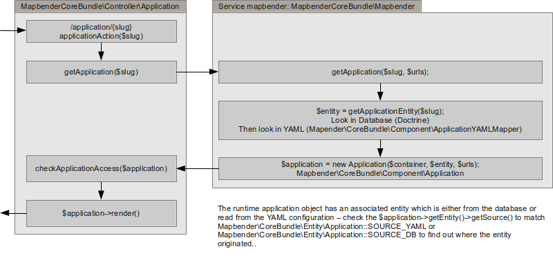

Request / Response Workflow¶
Note: We will move that documentation into the Contributing Guide.
This document explains the request/response workflow used in Mapbender3. Essentially there are three workflows you should be familiar with:
- Application workflow
- Element workflow
- Manager module workflow
Application Workflow¶
The standard application controller /application/{slug} is routed the the Mapbender\CoreBundle\Controller\Application::applicationAction($slug) function which does the following:
Basically the controller asks the mapbender service to look for an application with the given slug. The mapbender service first tries to find the application in the database and only if none can be found it looks in the applications defined in the YAML configuration.
The thus loaded entity of class Mapbender\CoreBundle\Entity\Application is tagged with it’s origin in the source attribute which is either Mapbender\CoreBundle\Entity\Application::SOURCE_YAML or Mapbender\CoreBundle\Entity\Application::SOURCE_DB.
The entity is passed in the constructor of the runtime application object of class Mapbender\CoreBundle\Component\Application which has all the logic while the entity holds all the data.
Access checks are not done in the mapbender service, entity or application object but in the controller’s getApplication function - keep in mind if you develop your own controller.
Element Rendering Workflow¶
Upon application rendering, every element is asked to render itself. The workflow is a little tangled but, basically the application asks it’s template to render itself which includes the template iterating over each element and calling the elements render function.
The render function usually uses twig to render a HTML fragment to stand for the element and this fragment must include an id attribute set to the id dynamically given to the element by the Mapbender application! As these ids are generated dynamically you must not use them for styling in your element’s CSS.
Also, the application iterates over each element and calls the getConfiguration method to collect all elements’ configuration arrays which are made available client-side in the Mapbender.configuration.elements variable - as well as given to each element’s widget construct method.
To sum up, the elements configurations are available:
- In the element’s render function which can pass the configuration to the twig file.
- In the element’s widget methods as “this->options”.
- In the Mapbender.configuration.elements JavaScript variable (for all elements)
Element Callback Workflow¶
The standard element callback /application/{slug}/element/{id}/{action} is routed to the Mapbender\CoreBundle\Controller\ApplicationController::elementAction($slug, $id, $action) function.
This function does the same as the applicationAction to get the application object, therefore application access is checked and no access to the element callback is possible if the user is not allowed to use the application.
The element is retrieved and then access to the element is checked based on the roles of the current user.
Finally, the element’s callback function Mapbender\CoreBundle\Component\Element::httpAction($action) is called. This function must return an Symfony\Component\HttpFoundation\Response object or throw an HttpException (not found, access denied, etc.)
It is left to the element to implement it’s logic in it’s httpAction method. Best practice is to do an switch statement over the $action parameter. Default should be an HttpNotFoundException. Using the standard Symfony methods you can access the request as an Symfony service with $this->get(‘request’) in the element class.
Element widgets can construct the callback URL for use in their Ajax calls by using their element id and the path provided in the Mapbender variable:
(function($) {
$.widget('mapbender.mbDemo', {
elementUrl: null,
_create: function() {
this.elementUrl = Mapbender.configuration.elementPath + this.element.attr('id') + '/';
},
_doMagic: function() {
$.ajax({
url: this.elementUrl + 'myAction',
data: { foo: 'bar' }
});
}
});
})(jQuery);
Manager Workflow¶
Manager modules are plain Symfony2 controller classes. To ensure their routes are prefixed with /manager - or whatever prefix is configured for the manager bundle - you should not use the Sensio\FrameworkExtraBundle\Configuration\Route annotation, but the special FOM\ManagerBundle\Configuration\Route annotation. Actually, that annotation class is not so special after all, but it enables the ManagerBundle to enforce the prefix.
It is best practice to use the Route annotation under a different name to make it visually easier to debug the controller for the use of the right annotation:
<?php
namespace Acme\DemoBundle\Controller;
use Symfony\Bundle\FrameworkBundle\Controller\Controller;
use FOM\ManagerBundle\Configuration\Route as ManagerRoute;
class DemoManagerController extends Controller
{
/**
* @ManagerRoute("/demo")
*/
public function demoAction()
{
/* ... */
}
}